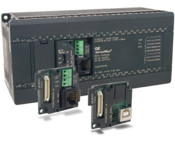

<html>
<title>контролер без имени</title>
<main>
<center>
 
<div class ="img">

</div>
<p><h1>Контролер</h1><br>
микроконтроллеры — функционально законченный МПК (микропроцессорный комплект)<br>
реализованный в виде одной СБИС (сверх-БИС). ОМК включает процессор, ОЗУ, ПЗУ<br>
 порты ввода-вывода для подключения внешних устройств, модули ввода аналогового<br>
 сигнала АЦП, таймеры, контроллеры прерывания, контроллеры различных интерфейсов<br>
 и т. д. Простейший ОМК представляет собой БИС площадью не более 1 кв. см и всего
 с восемью выводами.

Цена:60000.<br>
<br>
Тип:Cpy.<br>
<br>
Типы фрезов:все.<br>
<br>
Язык програмирования:С++.<br>
<br>
Количество выходов:7.
</p>
</center>
</main>
<style>
main {
	margin: 0 auto;
	width: 700px;
	background-color:#FFFF00;
	border:1px solid black;
	}
.img {

	}
</style>
</html>
